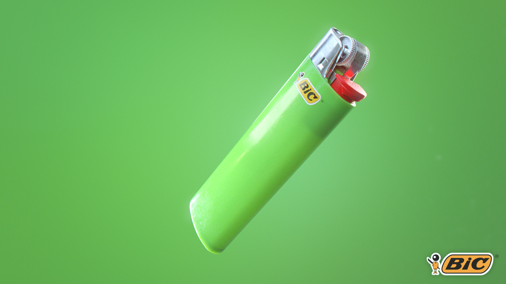
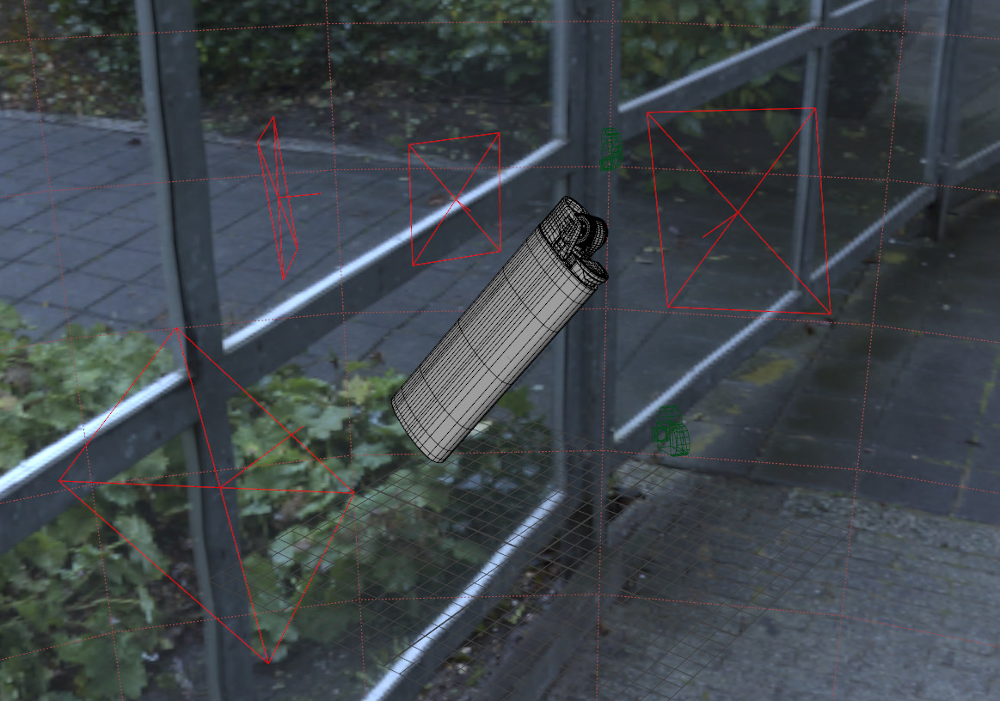
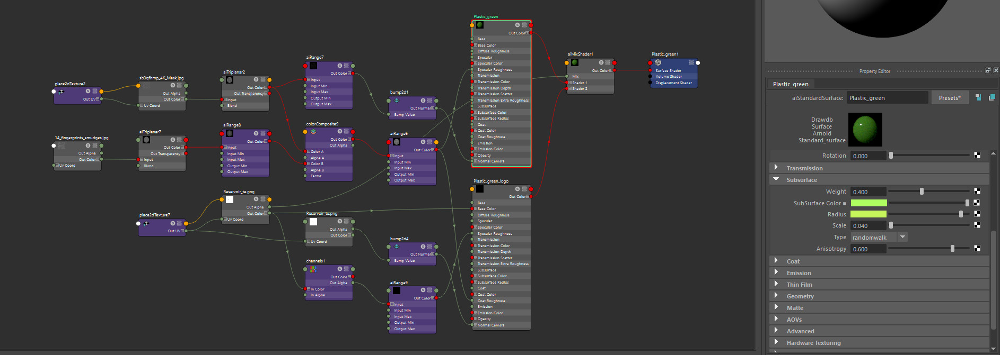
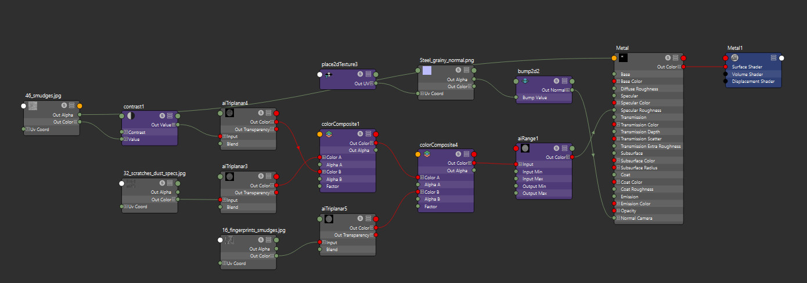

A school-work shading practice.
Surfacing is mainly node based, making mostly use of surface imperfection textures. Some details (engraving, decals) are uv-based.
The original author of the 3d model is a classmate as I didn't get time to finish mine for the assignment.